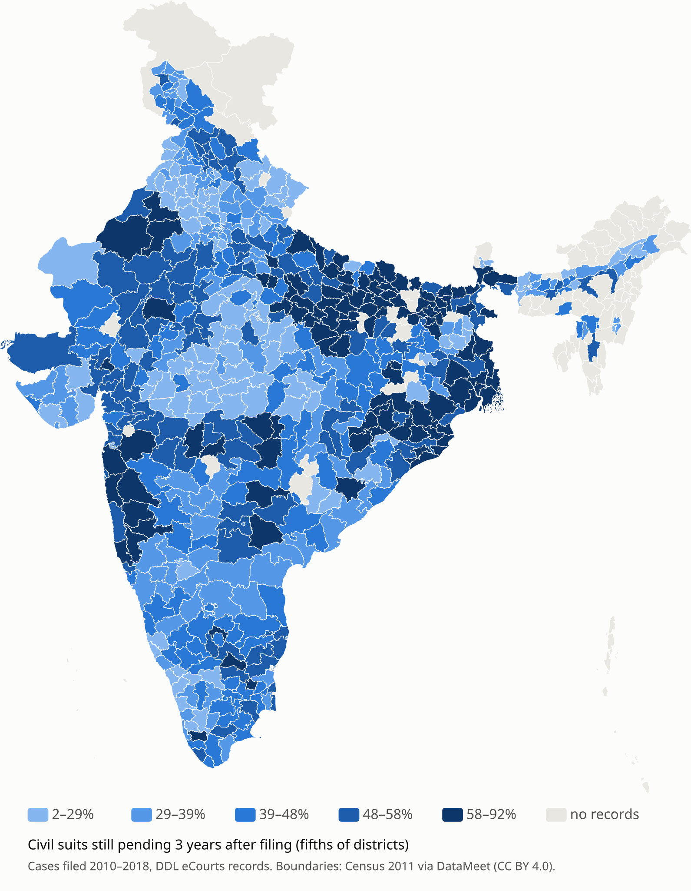

Crore cases are waiting in India's district courts.
What 80.9 million court records and the government's own figures say about how long justice takes, district by district.
The backlog, and what COVID added
The backlog clock
How long a case really takes
Average "age of pending cases" figures only look at cases still waiting, and ignore the ones already decided. Instead, CourtSight follows every case from filing to decision with a Kaplan–Meier survival estimate. Cases still pending when each state's data was collected are counted as undecided up to that date (right-censored), not dropped. The curve shows the share of cases still waiting after each month.
Years of waiting
Pending cases by how long they had already waited
What do slow districts have in common? correlation, not cause
Where civil suits wait longest

Civil cases pending after 3 years, by district
Change in share pending after 3 years, per 1 SD
Fastest districts (civil)
Slowest districts (civil)
Does a change of judge slow a courtroom down? no reliable estimate
What could be wrong with this? audit
Share of cases decided within a year, by year filed
data_audit.py, results/audit/.How much of the court system do the records cover?
Share decided within a year, by year filed: records that were already complete
coverage_audit.py.Method, and how it can be checked
Every number on this site is rebuilt from the public repository by CI on each change, and the 2026 forecast is locked by a SHA-256 hash.
Show the methods: formulas, tests and limits
- Stock–flow accounting
- Filings are never published for all years, so they are recovered from the identity
filedt = Pt − Pt−1 + Dtand the state series is tested against the printed national totals (Kerala's 2016 disposal figure fails and is excluded).
- COVID counterfactual
- Each state's mean log growth 2015–2019, projected forward. The bias and spread of the same projection method in pre-COVID backtests shift and widen the band.
- Time to decision
- Ŝ(t) = ∏tᵢ ≤ t (1 − dᵢ / nᵢ)Monthly Kaplan–Meier estimate by district × case type, censored at each state's collection month (the last month where decisions reach 20% of its 2018 average). Intervals: Greenwood variance.
- Judge handovers
- βk = E[ yc,t₀+k/ȳc,pre − meanc′ yc′,t₀+k/ȳc′,pre ]Planted-effect test: recovers a synthetic −30% drop. Placebo test on real data: fails (see 06).
- A forecast that can be proven wrong
- Pending cases on 31.12.2026, for every state, were committed on (commit
). The method was chosen by a rule fixed before any backtest was run, and it is graded once the government publishes the figure. A test fails if the files change: - Graded against hard baselines
- A district-level quantile model on the case records beats the best simple forecast by on held-out years. Graded against the official 2019 figures, it matches simple forecasts but does not beat them, and this page says so.
- Reproducible
- Every number on this page is rebuilt from the repository by CI on each change. Only aggregates are published: no case-level rows and no names of people.
- Limits
- No public case-level data exists after 2018, and the 2023–2025 series has no disposal figures. "Decided" includes dismissals, withdrawals and transfers. The data cannot say how many judges would be needed.
Data and code
Everything behind this page is in the repository and can be downloaded as plain CSV. Only aggregate counts are published.
| File | What it holds |
|---|---|
| by_district_case_type.csv | Time to decision, 619 districts and 6 special courts × 10 case types (corrected for digitisation) |
| waiting_years/districts.csv | Pending cases, case-years of waiting and their age, every district |
| district_drivers/districts.csv | District features (caseload per courtroom, judge tenure, case mix) with time to decision |
| backlog_clock/states.csv | Backlog clock for every state |
| covid_excess/by_state_2021.csv | COVID excess backlog by state |
| forecast_states_2026.csv | Locked forecast for 31.12.2026, every state |
| official_series.py | The official state series 2014–2025, transcribed with sources and checks |
| ddl_compact/ | 80.9 million case records compressed to filing × decision month counts (21 MB) |
A full write-up of the methods and results is in the working paper (PDF).
To cite: Goel, A. (2026). CourtSight: measuring and forecasting India's district-court backlog. https://github.com/ArnavGoel98/CourtSight